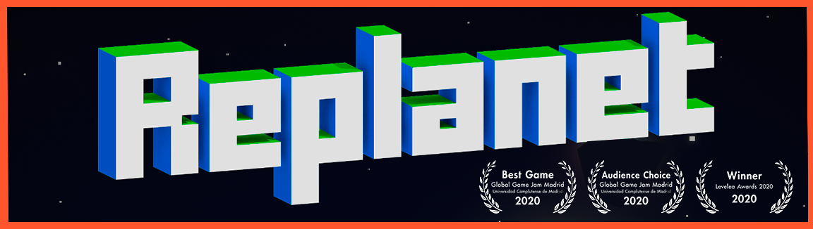

Replanet
 The game was created for the Global Gamejam 2020 at its headquarters in Madrid. It received the awards for best game valued by the jury and best game valued by attendees, making it the winning Game Jam game. It also won the first edition of the Levelea awards.
The game is made by seven students from the VideoGame Development career at the Complutense University of Madrid, who are First Try Studios_ (Marcos, Rodrigo and Kelvin) , Sergio Gavilán , Alberto Córdoba and Alejandro Villar.
Although you can find the direct download below, you can also download it from the itch.io from First Try Studios _.
The whole game is made by us with Unity3D , both art and sound level and programming during a 48-hour Gamejam.
Game Images
How to install?
Downoload the .zip file, extracr all files on a folder, depending on your OS and hit play!
También puedes descargarlo a través de la página oficial de la Global Gamejam 2020